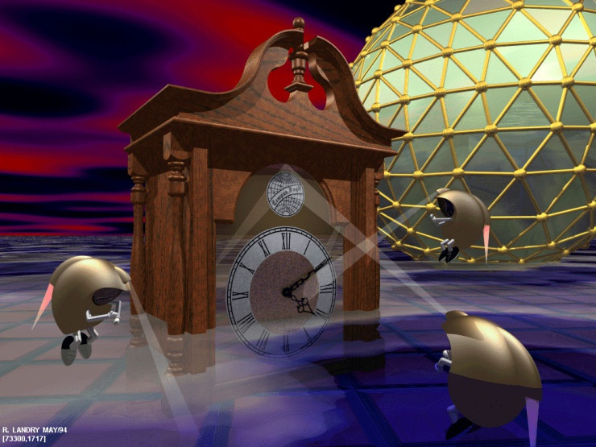

|
Album cover for the IDM (intelligent dance music) compilation. |
|||
|

Clock! by R. Landry released May 1994 |
One of the first if not the first, real time, ray traced video game was a Quake 3 |
The Utah Teapot is a famous 3D model created by |
|
|
screenshot from a sinbad short film. art by Wporter year unknown. |
The Amiga juggler demo (1987) was created by Eric Graham |
The Compleat Angler was a revolutionary paper written by Turner Whitted in 1979 which demostared ray-tracing to the public. |
Opalvision promo art by Wporter 1992. |